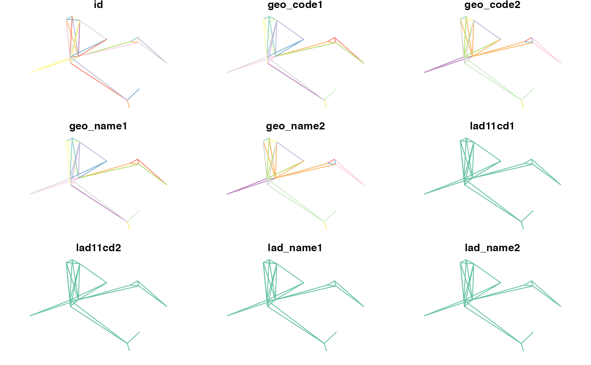

This data was obtained using code shown in the introductory pct package vignette.
names(wight_lines_30)#> [1] "id" "geo_code1" "geo_code2" #> [4] "geo_name1" "geo_name2" "lad11cd1" #> [7] "lad11cd2" "lad_name1" "lad_name2" #> [10] "all" "bicycle" "foot" #> [13] "car_driver" "car_passenger" "train" #> [16] "light_rail" "bus" "taxi" #> [19] "motorbike" "other" "govtarget_slc" #> [22] "govtarget_sic" "govtarget_slw" "govtarget_siw" #> [25] "govtarget_sld" "govtarget_sid" "gendereq_slc" #> [28] "gendereq_sic" "gendereq_slw" "gendereq_siw" #> [31] "gendereq_sld" "gendereq_sid" "dutch_slc" #> [34] "dutch_sic" "dutch_slw" "dutch_siw" #> [37] "dutch_sld" "dutch_sid" "ebike_slc" #> [40] "ebike_sic" "ebike_slw" "ebike_siw" #> [43] "ebike_sld" "ebike_sid" "govtarget_sldeath_heat" #> [46] "govtarget_slvalue_heat" "govtarget_sideath_heat" "govtarget_sivalue_heat" #> [49] "gendereq_sldeath_heat" "gendereq_slvalue_heat" "gendereq_sideath_heat" #> [52] "gendereq_sivalue_heat" "dutch_sldeath_heat" "dutch_slvalue_heat" #> [55] "dutch_sideath_heat" "dutch_sivalue_heat" "ebike_sldeath_heat" #> [58] "ebike_slvalue_heat" "ebike_sideath_heat" "ebike_sivalue_heat" #> [61] "govtarget_slco2" "govtarget_sico2" "gendereq_slco2" #> [64] "gendereq_sico2" "dutch_slco2" "dutch_sico2" #> [67] "ebike_slco2" "ebike_sico2" "e_dist_km" #> [70] "rf_dist_km" "rq_dist_km" "dist_rf_e" #> [73] "dist_rq_rf" "rf_avslope_perc" "rq_avslope_perc" #> [76] "rf_time_min" "rq_time_min" "geometry"plot(wight_lines_30)#> Warning: plotting the first 9 out of 77 attributes; use max.plot = 77 to plot all